facing not simulated, abilities off
engine c1ee225b, 2026-11-05
| id | situation | A roles | B roles | predicted rate A | measured rate A | agree | stalls (seeds) | none seeds | firing_capable A / B | median seed |
|---|---|---|---|---|---|---|---|---|---|---|
| L-0039 | cover | 2 Bombard + 3 Interceptor + 3 Vanguard | 3 Bastion + 2 Bombard + 3 Warden | 0.25 | 0.00 | disagree | 0 (-) | - | -1 / -1 | 10 |
| L-0061 | vantage | 12 Vanguard + 12 Warden | 8 Interceptor + 8 Raider + 8 Vanguard | 0.98 | 1.00 | agree | 0 (-) | - | 24.0 / 22.0 | 10 |
| L-0080 | trap | 8 Vanguard + 8 Warden | 10 Interceptor + 11 Raider + 11 Vanguard | 0.75 | 0.00 | disagree | 0 (-) | - | 5.0 / 10.0 | 10 |
| L-0083 | trap | 13 Vanguard + 11 Warden | 16 Interceptor + 16 Raider + 16 Vanguard | 0.75 | 0.00 | disagree | 0 (-) | - | 0.0 / 2.0 | 10 |
| id | situation | A roles | B roles | predicted rate A | measured rate A | agree | stalls (seeds) | none seeds | firing_capable A / B | median seed |
|---|---|---|---|---|---|---|---|---|---|---|
| L-0039 | cover | 2 Bombard + 3 Interceptor + 3 Vanguard | 3 Bastion + 2 Bombard + 3 Warden | 0.25 | 0.00 | disagree | 0 (-) | - | -1 / -1 | 10 |
heuristic target 0.25, measured 0.00, gap 25 pts (not scored)
What to expect: Pairs separated by a cover box do not see each other, so units edge round the boxes until they have a line. In the control strip (sight off) everyone sees everyone through the boxes and fires across them.
Approve means: The boxes hide units: the hollow marks sit behind the boxes and clear when the units edge round.
Deny means: A unit is hollow with a clear line to its enemy, or fires through a box it cannot see through; name the unit and frame.
blocked unit-frames: 0
first seen A never B never
| role | A mean survivors | B mean survivors | A start | B start |
|---|---|---|---|---|
| Bastion | 0.0 | 3.0 | 0 | 3 |
| Bombard | 2.0 | 2.0 | 2 | 2 |
| Interceptor | 3.0 | 0.0 | 3 | 0 |
| Vanguard | 3.0 | 0.0 | 3 | 0 |
| Warden | 0.0 | 3.0 | 0 | 3 |
median seed 10 strip (first shot outlined)
control: the same fight with everyone seeing everyone (sight off)


seeds: 1 2 3 4 5 6 7 8 9 10 11 12 13 14 15 16 17 18 19 20
| id | situation | A roles | B roles | predicted rate A | measured rate A | agree | stalls (seeds) | none seeds | firing_capable A / B | median seed |
|---|---|---|---|---|---|---|---|---|---|---|
| L-0061 | vantage | 12 Vanguard + 12 Warden | 8 Interceptor + 8 Raider + 8 Vanguard | 0.98 | 1.00 | agree | 0 (-) | - | 24.0 / 22.0 | 10 |
heuristic target 0.98, measured 1.00, gap 2 pts (not scored)
What to expect: Blue stands in an arc on the western rim of the hill, one band up, on guard. Red walks across the flat toward blue and sees nothing of blue until it is on the band; blue sees red coming from the start and fires down first. In the control strip (sight off) red fires at blue from range with no walk-in blind.
Approve means: The high ground sees first and fires first, red walks in blind, and blue's guard holds the rim.
Deny means: Red sees blue before blue sees red, blue leaves the rim, or red hits blue while blue lists no red unit as seen; name the frame.
blocked unit-frames: 0
first seen A 0 B never
| role | A mean survivors | B mean survivors | A start | B start |
|---|---|---|---|---|
| Interceptor | 0.0 | 0.0 | 0 | 8 |
| Raider | 0.0 | 0.0 | 0 | 8 |
| Vanguard | 12.0 | 0.0 | 12 | 8 |
| Warden | 12.0 | 0.0 | 12 | 0 |
median seed 10 strip (first shot outlined)


control: the same fight with everyone seeing everyone (sight off)


seeds: 1 2 3 4 5 6 7 8 9 10 11 12 13 14 15 16 17 18 19 20
| id | situation | A roles | B roles | predicted rate A | measured rate A | agree | stalls (seeds) | none seeds | firing_capable A / B | median seed |
|---|---|---|---|---|---|---|---|---|---|---|
| L-0080 | trap | 8 Vanguard + 8 Warden | 10 Interceptor + 11 Raider + 11 Vanguard | 0.75 | 0.00 | disagree | 0 (-) | - | 5.0 / 10.0 | 10 |
heuristic target 0.75, measured 0.00, gap 75 pts (not scored)
What to expect: Red is led into the walled pocket. Blue on the two hills at the mouth sees red before red sees anyone and fires first; the arc behind closes the way out. In the control strip everyone sees everyone from tick 0 and red does not walk in blind.
Approve means: The trap works as sight: red is seen from the hills before it sees blue, and the retreat is shut.
Deny means: Red sees the hills first, or the arc behind never closes; name the frame.
blocked unit-frames: 116
first seen A 0 B 0
| role | A mean survivors | B mean survivors | A start | B start |
|---|---|---|---|---|
| Interceptor | 0.0 | 8.0 | 0 | 10 |
| Raider | 0.0 | 10.0 | 0 | 11 |
| Vanguard | 4.0 | 11.0 | 8 | 11 |
| Warden | 4.0 | 0.0 | 8 | 0 |
median seed 10 strip (first shot outlined)


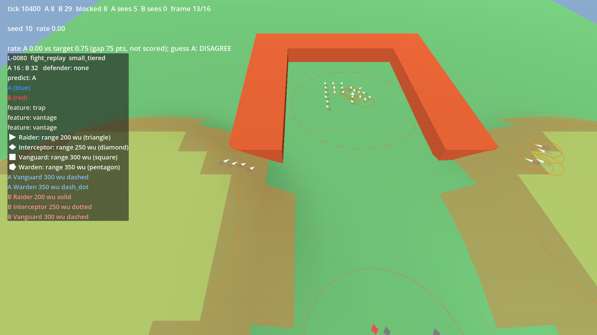
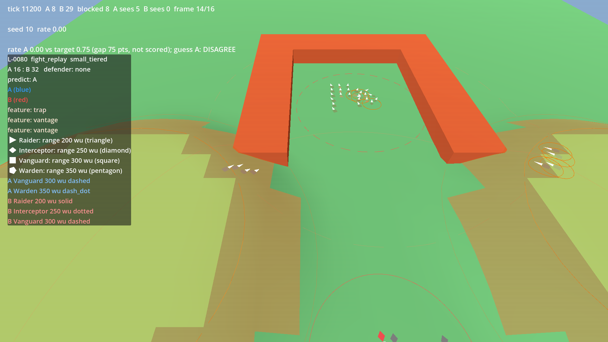
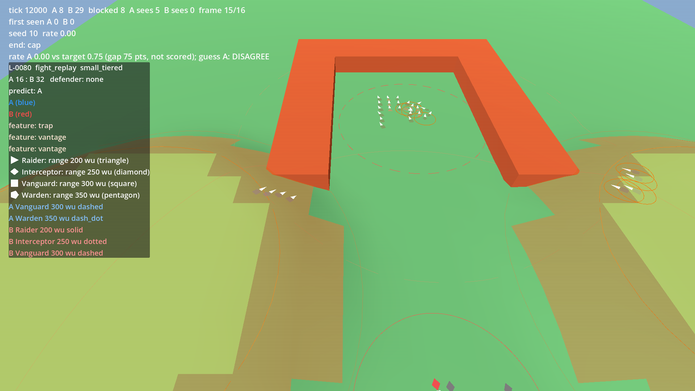
control: the same fight with everyone seeing everyone (sight off)


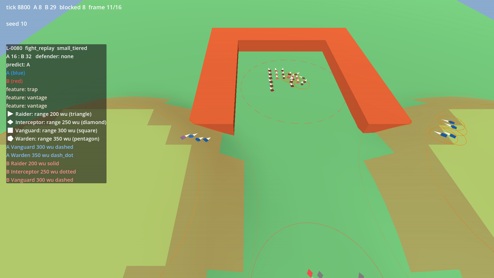
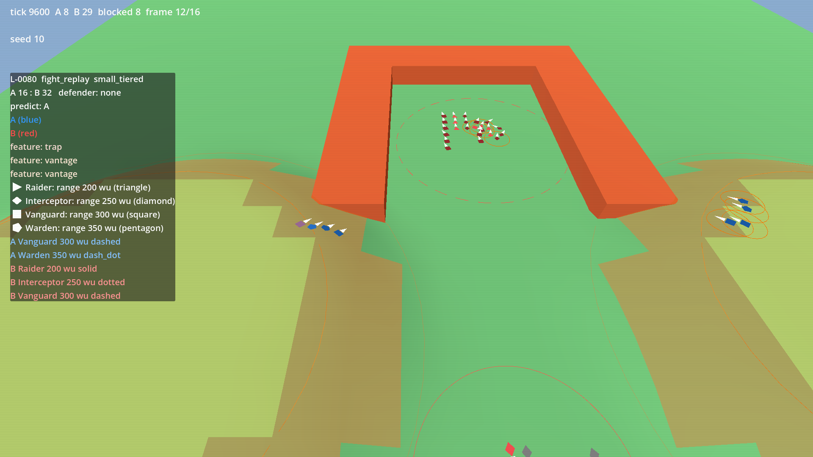
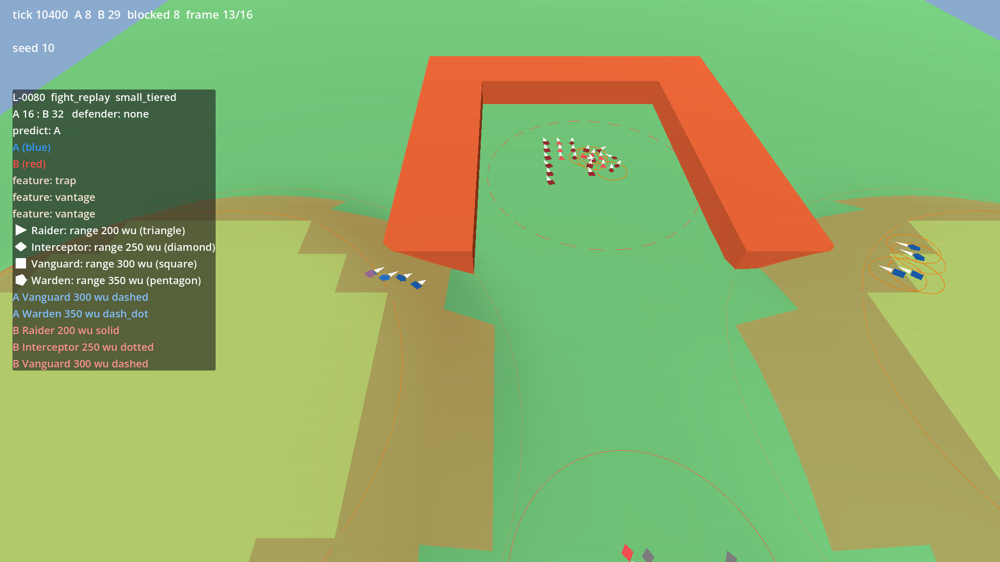
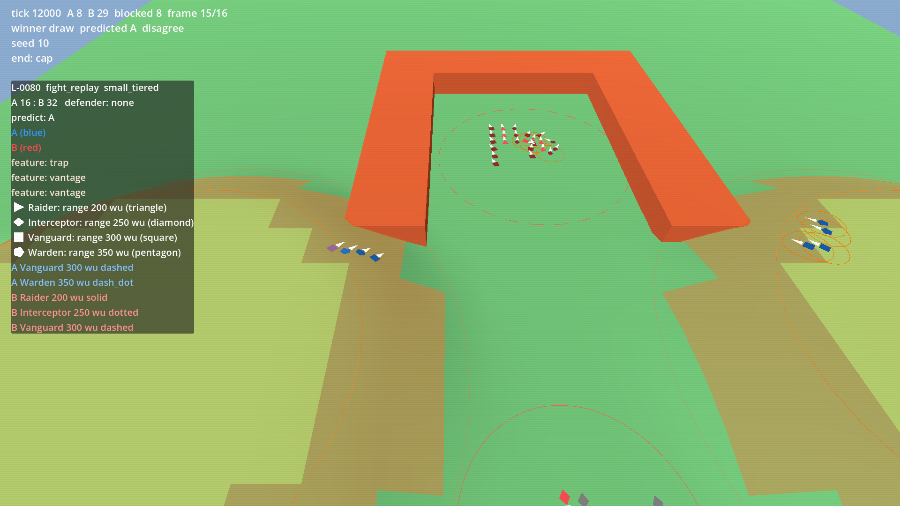
seeds: 1 2 3 4 5 6 7 8 9 10 11 12 13 14 15 16 17 18 19 20
| id | situation | A roles | B roles | predicted rate A | measured rate A | agree | stalls (seeds) | none seeds | firing_capable A / B | median seed |
|---|---|---|---|---|---|---|---|---|---|---|
| L-0083 | trap | 13 Vanguard + 11 Warden | 16 Interceptor + 16 Raider + 16 Vanguard | 0.75 | 0.00 | disagree | 0 (-) | - | 0.0 / 2.0 | 10 |
heuristic target 0.75, measured 0.00, gap 75 pts (not scored)
What to expect: The same trap at 24 blue against 48 red: red enters the pocket seen from the two hills before it sees them; the arc behind closes. In the control strip everyone sees everyone from tick 0.
Approve means: As L-0080 at the larger size: blue sees first, red is hollow until it has a line.
Deny means: As L-0080; or the larger red force finds blue without being seen first.
blocked unit-frames: 85
first seen A 0 B 0
| role | A mean survivors | B mean survivors | A start | B start |
|---|---|---|---|---|
| Interceptor | 0.0 | 15.0 | 0 | 16 |
| Raider | 0.0 | 15.0 | 0 | 16 |
| Vanguard | 8.0 | 16.0 | 13 | 16 |
| Warden | 7.0 | 0.0 | 11 | 0 |
median seed 10 strip (first shot outlined)


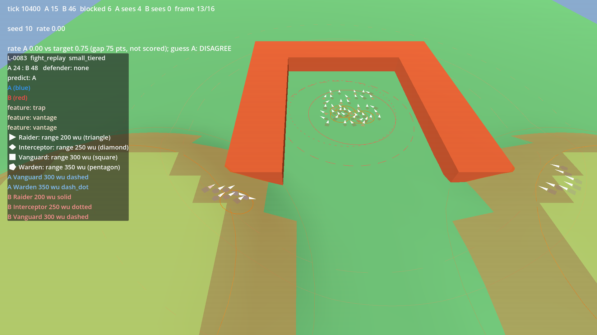
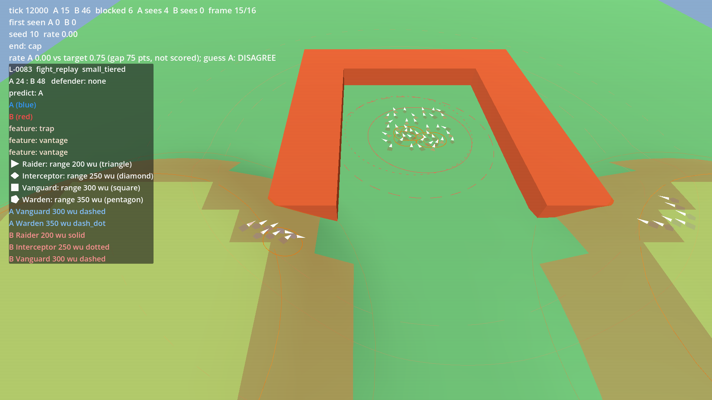
control: the same fight with everyone seeing everyone (sight off)


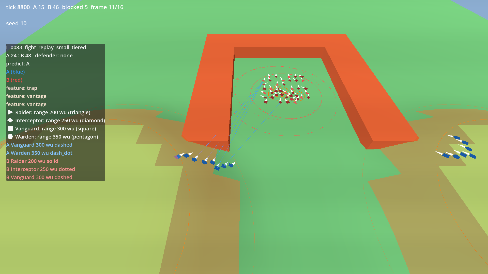
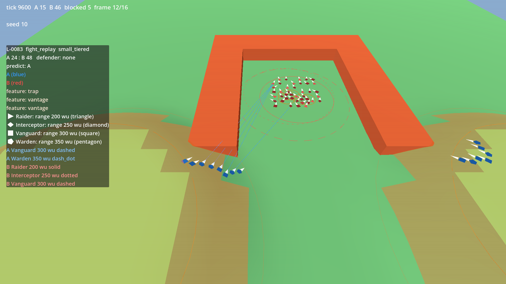
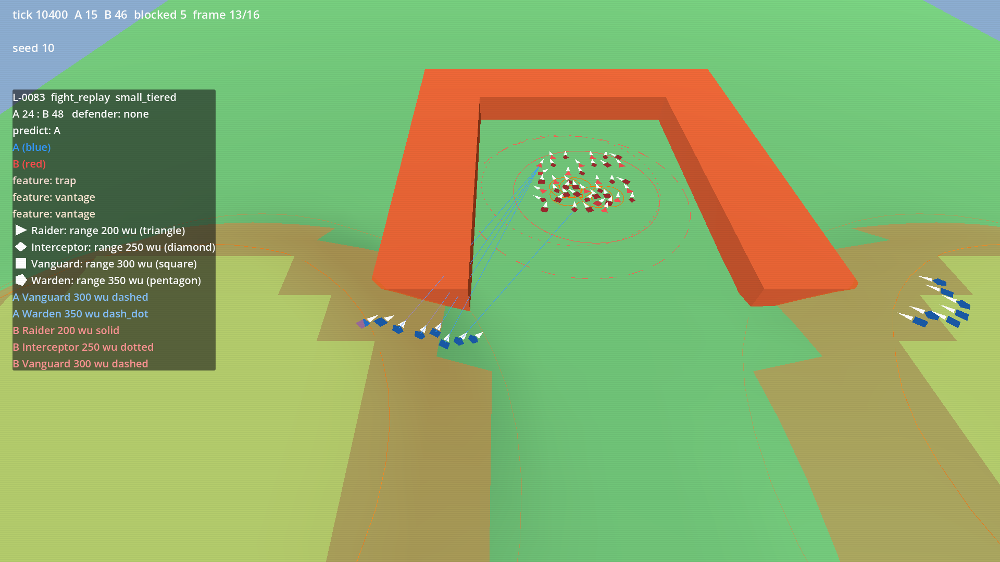
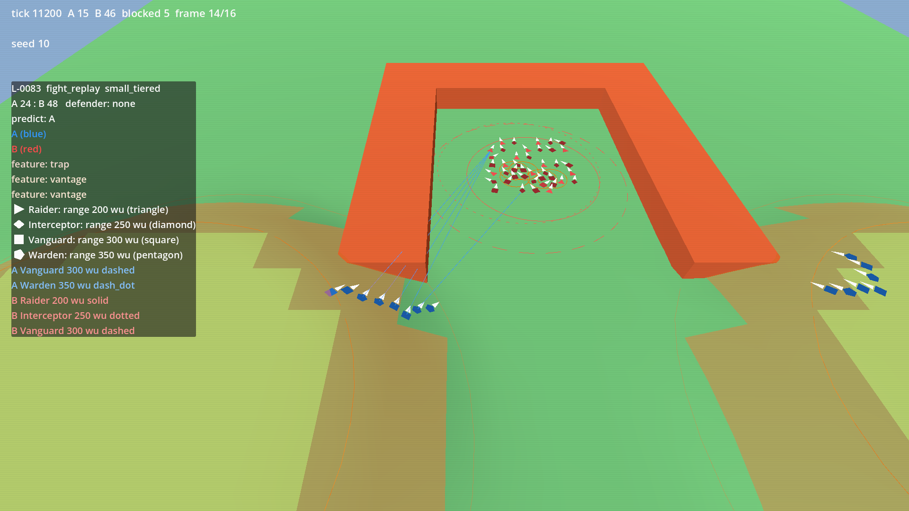
seeds: 1 2 3 4 5 6 7 8 9 10 11 12 13 14 15 16 17 18 19 20
Side A blue, side B red. Answer in verdicts.md: | id | verdict | feedback | with verdict A, B, draw or deny.